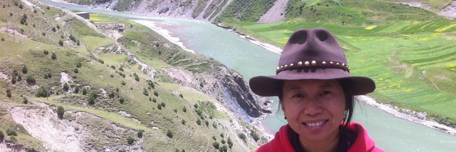

康日曼匝的冬虫夏草 ——王蕾
位于西藏高原那曲比如县优质产地，比如县出产的虫草是品质优的虫草，营养价值比低海拔地区高。

新鲜出土还未刷泥的虫草

采挖去泥后的新鲜虫草

剥去泥土深层清洁

虫草饱满，纹理清晰，四足明显
冬虫夏草是中国名贵的中药材，营养成分高于人参，可入药也可食用，是上乘的佳肴，具有很高的营养价值。冬虫夏草可以增强机体免疫力，滋补肺肾，对肺癌、肝癌有明显抑制作用，临床上对肺虚久咳、气喘、肺结核、咳血、肾虚、腰膝酸痛、阳痿遗精、神经衰弱及化疗放疗后的红细胞下降有疗效。
冬虫夏草，由虫体和子座两个部分组成。
新鲜、优质的冬虫夏草的虫体，肤质冰凉丝滑, 肤色呈现出金黄的色泽，全身无任何斑点，背部有七组纹路，每组纹路由三条纹路紧密并排组成。头部呈棕色，有一对棕黄色的发亮的眼睛，嘴的下端有两对明显的小爪，腹部有四对明显的小足，尾端也有一对明显的小足，虫体截面为乳白色，有v字形的消化腺，新鲜优质的冬虫夏草，头部较小，身体结实饱满。
“把子”即是指冬虫夏草的子座，子座越短，说明冬虫夏草虫草素含量越高，营养越好。以下这段文字是我多年来寻找最优质野生冬虫夏草的心得，愿与您分享[愉快]
冬虫夏草是中国名贵的中药材，营养成分高于人参，可入药也可食用，是上乘的佳肴，具有很高的营养价值。冬虫夏草可以增强机体免疫力，滋补肺肾，对肺癌、肝癌有明显抑制作用，临床上对肺虚久咳、气喘、肺结核、咳血、肾虚、腰膝酸痛、阳痿遗精、神经衰弱及化疗放疗后的红细胞下降有疗效。
冬虫夏草，由虫体和子座两个部分组成。
新鲜、优质的冬虫夏草的虫体，肤质冰凉丝滑, 肤色呈现出金黄的色泽，有细小汗毛，全身无任何斑点，背部有七组纹路，每组纹路由三根细细的条纹紧密并排组成。头部呈棕色，有一对棕黄色发亮的眼睛，嘴的下端有两对明显的小爪，腹部有四对明显的小足，尾端也有一对明显的小足，虫体截面为乳白色，有v字形的消化腺，新鲜优质的冬虫夏草，头部较小，身体结实饱满。
冬虫夏草的子座，是由其头顶部生长出来的一根或两根（很少见到三根）的草，故俗称为“草头”，也被当地藏族同胞称之为“把子”，它的长短标志着冬虫夏草从动物变为植物的时间，时间越短，子座越短，其营养价值越高，通常，子座生长的时间在一周之内的，其长度不会超过虫体，被称之为“头期草”，营养价值高于子座生长时间超过两周及三周的“中期草”和“晚期草”。子座的自然长度不超过一寸的冬虫夏草被称之为“寸金草”，是百里挑一的优质冬虫夏草。子座由三段颜色组成，最接近头部的颜色为棕褐色，过渡到中间呈淡黄色，再逐步形成棕褐色的草尖，草尖细小、圆润，无被人为修剪的痕迹。
新鲜的冬虫夏草，口感甜、脆、鲜，表皮洗净后可直接食用，也可以放在开水中煮3分钟后食用，口感最佳，最适合老人，需放入冰箱冷冻保存。晾干的冬虫夏草，甜味变淡，鲜味更浓，可放入开水中煮十五分钟后食用，放入冰箱冷冻保存，也可放在康日曼匝冬虫夏草西藏实木储存盒中保存。冬虫夏草越新鲜，营养成分越高，不建议您一年以上的保存。